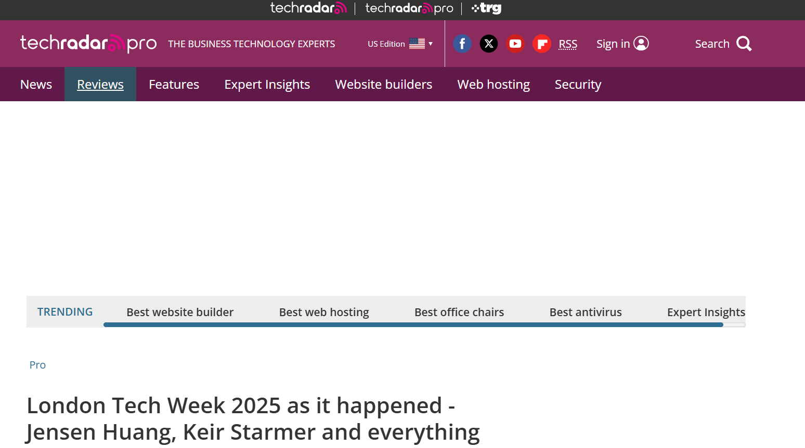
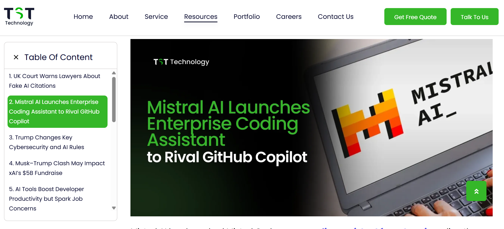

Artikel

London Tech Week 2025
Ajang ini menegaskan peran AI sebagai infrastruktur penting: Nvidia, Microsoft, dan pemerintah Inggris menggelontorkan investasi dan pelatihan AI untuk jutaan pekerja.
Baca Selengkapnya...

Mistral AI hadapi Copilot & Gemini berkembang
Mistral meluncurkan ‘enterprise coding assistant’ bersaing dengan GitHub Copilot, sementara Google Gemini memperkaya fitur otomatisasi tugas.
Baca Selengkapnya...